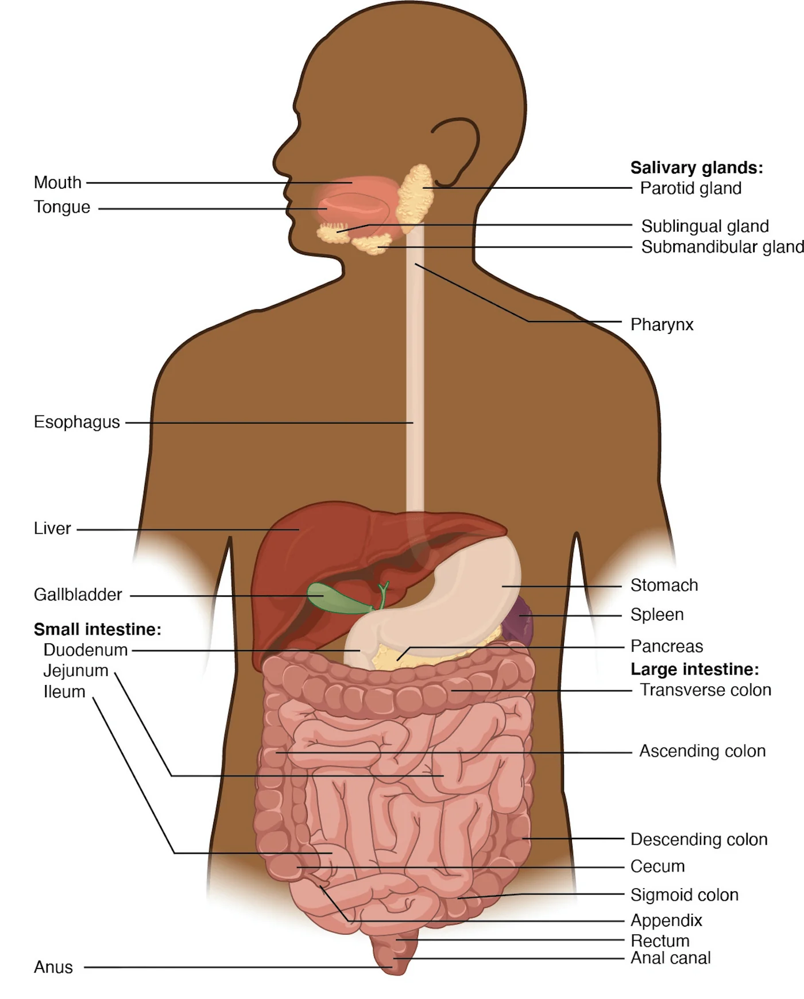

The Digestive System
TEAS objective S.1.4 · Human Anatomy & Physiology
What the TEAS expects: you can put the organs of the digestive tract in order, say what each one does, tell mechanical from chemical digestion, and name the accessory organs and their jobs.
1. One long tube plus helpers
The alimentary canal (GI tract) is a continuous tube from mouth to anus. Food passes through these organs in order:
- Mouth: chewing breaks food up; saliva starts digesting starch (salivary amylase).
- Pharynx: swallowing.
- Esophagus: a muscular tube that pushes food to the stomach by peristalsis (waves of muscle contraction).
- Stomach: churns food and mixes it with acid and enzymes; begins protein digestion (pepsin). The acid (HCl) kills microbes and activates pepsin. The result is a soupy mix called chyme. A ring of muscle at each end controls flow: the lower esophageal (cardiac) sphincter keeps acid out of the esophagus, and the pyloric sphincter lets chyme into the duodenum a little at a time.
- Small intestine: duodenum → jejunum → ileum. Finishes chemical digestion and absorbs most nutrients.
- Large intestine: cecum (with the appendix attached) → ascending, transverse, descending and sigmoid colon → rectum. Absorbs water and electrolytes and forms feces.
- Anus: elimination.
The accessory organs help digestion but are not part of the tube itself: the teeth and tongue in the mouth, plus the salivary glands, liver, gallbladder and pancreas. Food never passes through the glands, liver, gallbladder or pancreas; they send their secretions into the tract through ducts.

Tap or click the figure to open it full size.
Check 1: Put these in order: ileum, esophagus, duodenum, stomach, sigmoid colon. Answer at the bottom of the page.
2. Mechanical versus chemical digestion
- Mechanical digestion breaks food into smaller pieces without changing the molecules: chewing, stomach churning, and segmentation in the small intestine.
- Chemical digestion uses enzymes to break the chemical bonds in large molecules.
| Nutrient | Broken down into | Where digestion starts | Key enzymes |
|---|---|---|---|
| Carbohydrates | Simple sugars (such as glucose) | Mouth | Salivary amylase, pancreatic amylase |
| Proteins | Amino acids | Stomach | Pepsin (stomach), trypsin (pancreas) |
| Fats (lipids) | Fatty acids and monoglycerides | Small intestine (where almost all of it happens) | Lipase (pancreas) |
Why the small intestine matters most: pancreatic enzymes and bile arrive in the duodenum, and its lining finishes the job. Nearly every nutrient is both digested and absorbed there.
3. The accessory organs
- Liver: makes bile, processes absorbed nutrients, stores glycogen, and detoxifies drugs and alcohol.
- Gallbladder: stores and concentrates bile, and releases it into the duodenum when fatty food arrives.
- Bile emulsifies fat: it breaks large fat globules into tiny droplets so lipase can work faster. Bile contains no digestive enzymes.
- Pancreas: sends digestive enzymes (for carbohydrates, proteins and fats) plus bicarbonate, which neutralizes stomach acid, into the duodenum. (The pancreas also makes insulin and glucagon; see the endocrine page.)
Check 2: A person has had their gallbladder removed. Which nutrient might they have more trouble digesting after a large meal, and why? Answer at the bottom.
4. Absorption
- Small intestine: its inner surface is folded, covered in finger-like villi, and the cells covering each villus have microvilli. This gives a huge surface area for absorbing nutrients. Sugars and amino acids enter blood capillaries; most fats enter lymph vessels (lacteals) first. Blood from the intestines goes first to the liver through the hepatic portal vein, which is why the liver processes absorbed nutrients.
- Large intestine: absorbs most of the remaining water and electrolytes. Its bacteria also make some vitamins, such as vitamin K.
Common traps
- Thinking the stomach absorbs most nutrients. It absorbs little (alcohol and some drugs); the small intestine does most of it.
- Thinking bile is an enzyme. Bile emulsifies; lipase digests.
- Thinking food passes through the liver or pancreas. They send secretions into the tract through ducts.
- Confusing peristalsis with chewing. Peristalsis is the wave of smooth muscle contraction that moves food along.
- Mixing up the colon order. Ascending (up the right side), transverse (across), descending (down the left), sigmoid (S-shaped), then rectum.
Learn it properly
- Overview of the organs: OpenStax Anatomy and Physiology 2e, Section 23.1 Overview of the Digestive System: OpenStax (opens in a new tab)
- Small and large intestines: Section 23.5 The Small and Large Intestines: OpenStax (opens in a new tab)
- Liver, pancreas and gallbladder: Section 23.6 Accessory Organs in Digestion: OpenStax (opens in a new tab)
Check answers
- Esophagus, stomach, duodenum, ileum, sigmoid colon.
- Fat. Without the gallbladder, bile trickles in continuously from the liver instead of arriving in a concentrated burst, so a large fatty meal is emulsified less well.
ESCC TEAS Prep · Original study material written for Eastern Shore Community College. Figures from OpenStax, Anatomy and Physiology 2e, licensed CC BY 4.0.